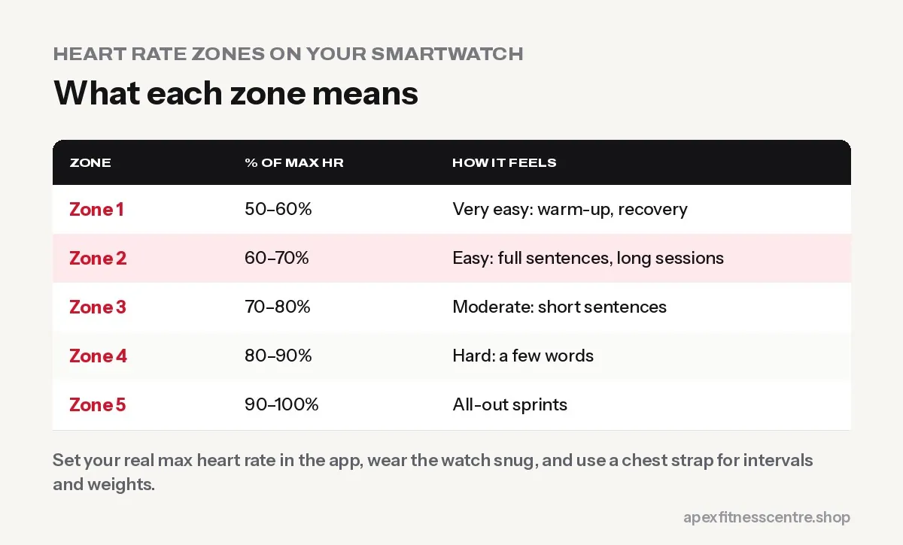

Heart Rate Zones Explained: How to Use Your Smartwatch to Train Smarter
What heart rate zones mean, how to set yours on Apple Watch, Garmin, Fitbit or any smartwatch, how accurate wrist readings are, and how to use zones.
Heart rate zones divide your effort into five levels, based on a percentage of your maximum heart rate. Zone 1–2 is easy, Zone 3 moderate, and Zones 4–5 hard. To use them well, set your maximum heart rate properly in your watch app (the default “220 minus age” can be off by 10+ beats), check readings with the talk test, and plan most of your cardio in Zone 2 with some harder sessions in Zones 4–5.
Wearable technology is the number one fitness trend of 2026 according to the American College of Sports Medicine (ACSM). Most people wear a watch that shows heart rate zones, but few use them correctly.
The five heart rate zones

| Zone | % of max heart rate | How it feels | Good for |
|---|---|---|---|
| 1 | 50–60% | Very easy | Warm-up, recovery |
| 2 | 60–70% | Easy, can talk in full sentences | Aerobic base, fat use, long sessions |
| 3 | 70–80% | Moderate, short sentences | General fitness |
| 4 | 80–90% | Hard, a few words | Threshold, race fitness |
| 5 | 90–100% | All-out | Short sprints, intervals |
Different brands use slightly different formulas and zone boundaries, so your watch’s “Zone 2” may not match another app exactly.
Step 1: Set your maximum heart rate properly
Most watches estimate maximum heart rate from your age. Two common formulas:
- 220 − age (the old default)
- 208 − (0.7 × age) (the Tanaka formula, often more accurate for adults)
For a 40-year-old, 220 − age gives 180, while Tanaka gives 180 too; for a 60-year-old, they give 160 vs 166. Real maximum heart rate can still differ from either formula by 10 or more beats.
Better options:
- Use your highest reading from a hard workout (for example, the end of a hard uphill run) if you’re healthy and used to hard exercise.
- Let the watch learn: many watches update your maximum or zones automatically from your workouts.
- Use heart rate reserve if your app offers it: it also uses your resting heart rate and is often more personal.
Taking medicines like beta-blockers? They lower your heart rate, so zones won’t be accurate. Use effort and the talk test instead, and ask your doctor.
Step 2: Check your watch is accurate
Wrist sensors use light to measure blood flow, which can be thrown off by movement, a loose strap, cold skin, tattoos and sweat. A study presented by the American College of Cardiology found that wrist-worn monitors were less accurate than chest straps, especially during more intense exercise (ACC).
To improve accuracy:
- Wear the watch snug, a finger’s width above the wrist bone
- Tighten it a notch during workouts
- Use a chest strap for intervals, weights or rowing, where arm movement confuses wrist sensors
- Cross-check with the talk test: if your watch says Zone 2 but you can’t speak, trust your breathing
Step 3: Plan your week with zones
A simple, research-supported approach is to keep most of your cardio easy and some of it hard, often called 80/20 training.
| Goal | Weekly cardio plan |
|---|---|
| General health | 2–3 × 30–45 min Zone 2, plus daily walking |
| Fat loss (with strength training) | 2–3 × Zone 2 sessions, 1 interval session, high daily steps |
| Running a 5K or 10K | 3 × easy Zone 2 runs, 1 interval or tempo session (Zone 4) |
| Heart fitness for older adults | Zone 2 most days, with doctor approval for harder work |
More detail in our guides to Zone 2 training and Japanese interval walking.
Other watch numbers worth using
- Resting heart rate: a gradual fall over months usually means better fitness. A sudden rise can mean poor sleep, stress, illness or overtraining.
- Heart rate recovery: how fast your heart rate drops in the minute after hard effort. Faster recovery usually reflects better fitness.
- Steps: simple and useful. See walking for weight loss.
- Sleep: watch estimates aren’t perfect, but trends are helpful.
Numbers to ignore (or take lightly)
- “Calories burned”: watches often overestimate exercise calories. Don’t “eat back” all of them.
- “Fat-burning zone” promises: Zone 2 uses a higher percentage of fat, but total fat loss mostly depends on your diet and total activity.
- VO2 max estimates: useful for trends, not exact numbers.
When to see a doctor
Stop exercising and seek medical help if you have chest pain, severe breathlessness, fainting or an irregular heartbeat, or if your watch repeatedly warns of an irregular rhythm.
Frequently asked questions
What heart rate zone burns the most fat?
Zone 2 burns a higher percentage of fat, but harder zones burn more total calories per minute. For fat loss, total calories, diet and consistency matter most.
Is my Apple Watch or Garmin heart rate accurate?
Usually reasonably accurate at steady efforts, but less reliable during intervals, weights and fast arm movements. A chest strap is more accurate.
How do I find my real maximum heart rate?
The safest way is to let your watch learn from hard workouts or use a supervised exercise test. Formulas are only estimates.
How long should I train in Zone 2?
Most people benefit from 2–3 sessions of 30–60 minutes a week.
Why is my heart rate so high on easy runs?
Heat, dehydration, poor sleep, stress, caffeine or simply being new to running. Slow down, walk if needed, and your easy-pace heart rate will improve over weeks.
Sources
- ACSM top fitness trends for 2026 (American College of Sports Medicine)
- Wrist-worn heart rate monitors less accurate than standard chest strap (American College of Cardiology)
- WHO fact sheet: physical activity (World Health Organization)
General information, not medical advice. Check with a doctor before hard exercise if you have a heart condition or take heart medicines.
General information, not medical advice. Ask a doctor if you have a health condition. Results vary from person to person.
Comments
Loading comments…